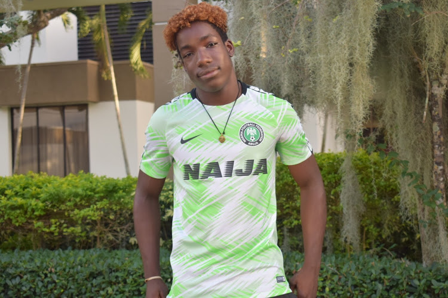
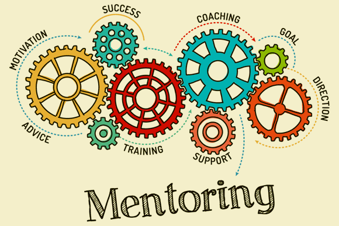
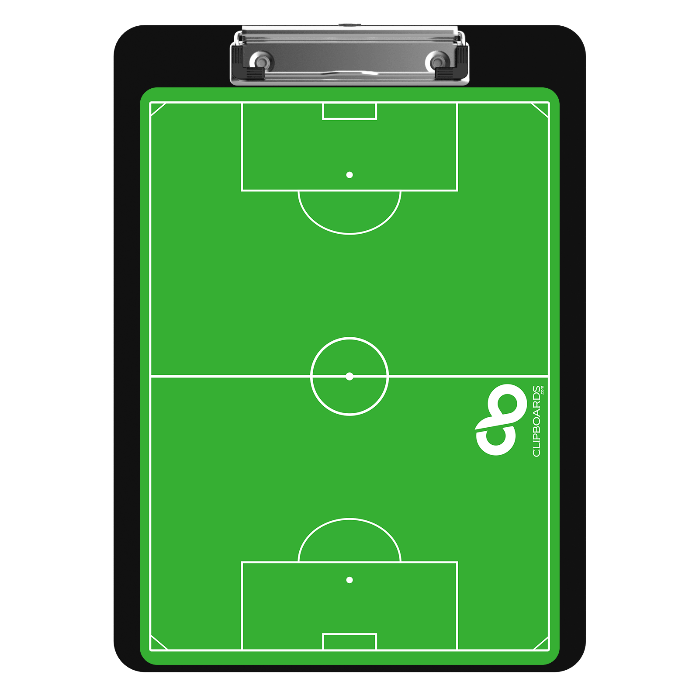
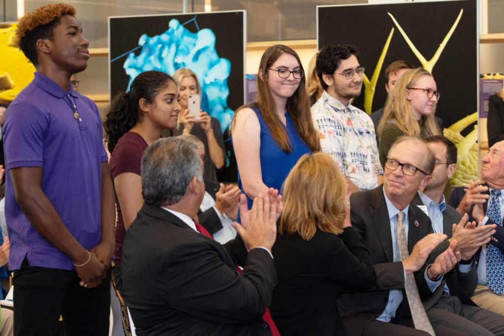
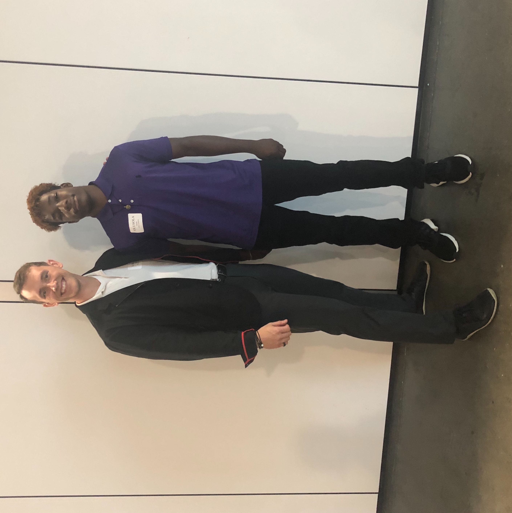
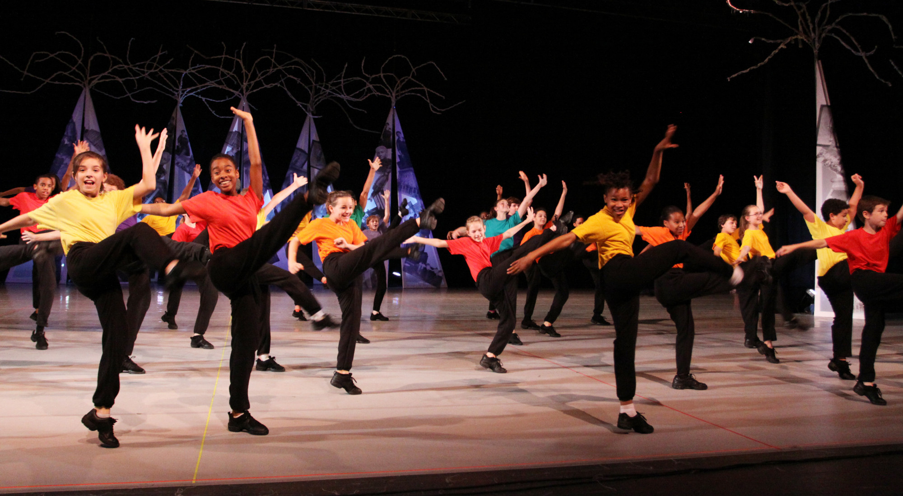

About Me
Posted on September 1, 2019 at 6:00 PM

I'm Olusola Fatade, though I go by Sola (pronounced "show-la"). I'm currently studying Computer Engineering and Computer Science at Florida Atlantic University and recently joined the National Society of Black Engineers' (NSBE) Florida Chapter. I also hold strong interests in business and education. My hobbies include sports (soccer, basketball, table tennis, etc), coaching, reading, dancing, videography, and volunteering.
Skills:
- Programming in Multiple Languages: including C, C++, JavaScript, Python, PHP, HTML, CSS, and MySQL
- Website Development
- Algorithm Analysis
- Data Science
- Machine Learning
- Team Leadership
- Self-Motivated
- Strong Verbal Communication
- Conflict Resolution
- Staff Development
- Project Management
- Process Implementation
- Client Assessment and Analysis
Experience:

University Student Mentor/Peer Coach - August 2018 to Present
I'm currently a peer mentor for sophomores at FAU High School. My job is to ease their transition into college life by connecting/providing them with the proper resources to not only succeed, but excel as they pursue their degree(s).
FAUHS Assistant Soccer Coach - October 2018 to January 2019
I was fortunate enough to transition from player to assistant coach of my high school soccer team. My responsibilities included providing drills for training, working one on one with players, and working with the head coach to come up with tactics and gameplans.Library Volunteer - May 2017 to August 2017
Working as a library volunteer required me to be flexible. I served as a liaison between patrons and staff, acted as a scribe, was put in charge of signing children up for the summer reading program, set up and cleaned up events, and did anything else required of me by my supervisors.SAS Volunteer Notetaker - August 2015 to December 2017
As a volunteer notetaker: I attended lectures to take notes for disabled persons, created additional study materials as needed, and answered any subsequent questions from the people I was partnered with.
Awesome Opportunities I've Been A Part Of:
 I attended FAU High School, which allowed me to start attending college at the age of 14. The program prepares 9th graders to handle college courseloads, and then pays for them to take classes at the university from 10th-12th grade. I graduated in May of 2019 as a nationally recognized National Merit Semifinalist, with 102 credits earned towards a Bachelors degree in Computer Engineering and a minor in Computer Science and a certification from the Max Planck Florida Institute.
I attended FAU High School, which allowed me to start attending college at the age of 14. The program prepares 9th graders to handle college courseloads, and then pays for them to take classes at the university from 10th-12th grade. I graduated in May of 2019 as a nationally recognized National Merit Semifinalist, with 102 credits earned towards a Bachelors degree in Computer Engineering and a minor in Computer Science and a certification from the Max Planck Florida Institute. -  Being a National Merit Semifinalist, I was offered the opportunity to be one of the first six high school students to study at the Max Planck Institute for Neuroscience in Jupiter, Florida. We were trained to create neural networks capable of processing the immense amount of data gathered by the researchers at the institute. My team worked on creating a network capable of identifying vesicles in the images provided by the scientists. Our tenure as the inagural class was successful and the FAU Max Planck academy is now set to open in Fall 2020 (as a part of the new partnership between FAU and Max Planck).
- 
The Machine Perception and Cognition Robotics (MPCR) Lab at FAU contacted me to join them as they formed a partnership with the gym TrainerSpace, looking to implement their Machine Learning based pose-tracking software in TrainerSpace's facilities. We've received funding from the NSF and are currently working towards commercializing the technology.
Visit the MPCR Lab website. / Visit the Trainerspace website
-  From 4th to 6th grade I participated in a dance program called Minds In Motion (MiM), founded by the Richmond Ballet. An in-school program, it also offers a more select after-school program for those who are more inclined. I was able to join the after-school program and traveled with the dance troupe throughout the state, performing different choreographies.
Contact Info:
Email - ofatade2015@fau.eduMy LinkedIn
What's Next:
Upon recieving my Bachelors in CE, I plan to continue my education by applying to a select number of universities to earn my Masters in Business Administration. In the meantime, aside from my studies, I love to engage in small projects to enhance my proficency in areas I hope will be applicable to my future. For example, I recently programmed a game, shown below:Invisible Maze
Made using: Khan Academy Computer Science
(You can also play the game on Khan Academy, linked here.)